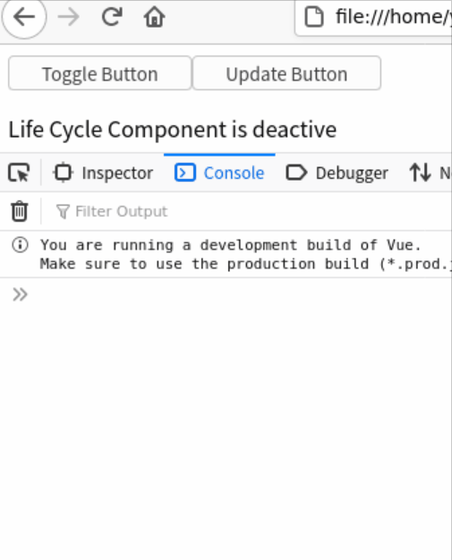

Vue3简介¶
介绍
Vue3.0的基本用法和响应性模型，所有样例可在GitHub仓库中找到
声明式渲染¶
代码实例¶

-
- Vue.js使用了基于HTML的模板语法，允许开发者声明式地将DOM绑定至底层组件实例的数据，具体语法可参考“模板语法”官方文档
- 最常见的绑定DOM和数据的方法是：双大括号
{{ }}- 例如，实例中的
{{ counter }}就将<div>中的文本和根组件实例vm的counter数据绑定。当vm.counter发生变化时，<div>中的文本也会相应变化<div id="app"> Counter: {{ counter }} </div>
- 例如，实例中的
-
- 每个Vue应用都是通过全局API
createApp函数创建的一个新应用实例开始的，传递给createApp的选项用于配置根组件，当我们挂载应用时，该组件被用作渲染的起点- 例如，实例中
RootComponent被作为根组件选项传给createApp创建出应用实例app。通过应用APImount，根组件实例vm被创建，并挂载到id是app的<div>标签，开始渲染const RootComponent = { data() { return { counter: 0 } }, mounted() { setInterval(() => { this.counter++ }, 1000) } } const app = Vue.createApp(RootComponent) const vm = app.mount('#app')
- 例如，实例中
- 每个Vue应用都是通过全局API
深入理解响应性原理¶
Vue最独特的特性是其非入侵性的响应性系统，响应性系统需要解决以下几个问题：
什么是响应性？¶
- 简单来说，响应性系统中的各组件能感知到其他相关组件的变化，更新自己的状态。例如：
sum = val1 + val2作为一个响应系统，我们需要在读写时做额外的事情(副作用)，从而将sum和val1, val2绑定：- 当一个值被读取时进行追踪
- 响应性系统的读操作是有副作用的。例如，当读取
sum的值时，需要追踪读操作的依赖val1和val2，记录依赖关系
- 响应性系统的读操作是有副作用的。例如，当读取
- 当某个值改变时进行检测，重新运行代码来读取原始值
- 同样，响应系统的写操作也有同样的副作用。例如，当
val1或者val2发生变化时，需要检测这个写操作的依赖sum，再次运行sum = val1 + val2来更新sum的值
- 同样，响应系统的写操作也有同样的副作用。例如，当
- 当一个值被读取时进行追踪
Vue如何指定哪些代码在执行？¶
- 上面的例子中的副作用
sum = val1 + val2被包裹在一个函数updateSum中。当在数值变化时，响应性系统能随时执行相应的副作用const updateSum = () => { sum = val1 + val2 }
Vue如何跟踪变化？¶
- 副作用按照上述方法被准备好后，需要解决的问题是：Vue是如何知道哪个副作用，应该在何时运行，并能在需要时再次执行它？
- Vue会将一个组件的
data函数返回的对象包裹在一个带有get和set处理程序的Proxy中，Proxy 是一个对象，它包装了另一个对象，存储为this.$data，并允许你拦截对该对象的任何交互。const dinner = { meal: 'tacos' } const handler = { get(target, property, receiver) { track(target, property) return Reflect.get(...arguments) }, set(target, property, value, receiver) { trigger(target, property) return Reflect.set(...arguments) } } const proxy = new Proxy(dinner, handler) console.log(proxy.meal) - 以上面的代码为例，
- 当一个值被读取时进行追踪：
- proxy的
get处理函数中track函数记录了该property和当前副作用
- proxy的
- 当某个值改变时进行检测，重新运行代码来读取原始值：
- proxy的
set处理函数中trigger函数查找哪些副作用依赖于该property并执行它们
- proxy的
- 当一个值被读取时进行追踪：
- 下面我们用一个组件表达响应系统
sum = val1 + val2data返回的对象将被包裹在响应式代理中，并存储为this.$data。Propertythis.val1和this.val2分别是this.$data.val1和this.$data.val2的别名，因此它们通过相同的代理- Vue将把
sum的函数包裹在一个副作用中。当我们试图访问this.sum时，它将运行该副作用来计算数值。包裹$data的响应式代理将会追踪到，当副作用运行时，propertyval1和val2被读取了const vm = createApp({ data() { return { val1: 2, val2: 3 } }, computed: { sum() { return this.val1 + this.val2 } } }).mount('#app') console.log(vm.sum) // 5 vm.val1 = 3 console.log(vm.sum) // 6
如何让渲染响应变化？¶
- 一个组件的模板被编译成一个
render函数，render函数通过h函数创建VNodes，描述该组件应该如何被渲染。它被包裹在一个副作用中，允许Vue在运行时跟踪被“触达”的property。如果这些property中的任何一个随后发生了变化，它将触发副作用再次运行，重新运行render函数以生成新的VNodes
生命周期¶

生命周期实例¶

- JS代码
- 所有生命周期钩子的
this上下文将自动绑定至实例中，因此可以访问组件的data、computed和methods - 生命周期钩子函数会按照生命周期的执行顺序，被执行，详情可以参考官方文档
const LifeCycle = { template: ` <p>Life Cycle Component</p> `, beforeCreate() { console.log('life cycle function: beforeCreate') }, created() { console.log('life cycle function: created') }, beforeMount() { console.log('life cycle function: beforeMount') }, mounted() { console.log('life cycle function: mounted') }, beforeUpdate() { console.log('life cycle function: beforeUpdate') }, updated() { console.log('life cycle function: updated') }, beforeUnmount() { console.log('life cycle function: beforeUnmount') }, unmounted() { console.log('life cycle function: unmounted') } }
- 所有生命周期钩子的